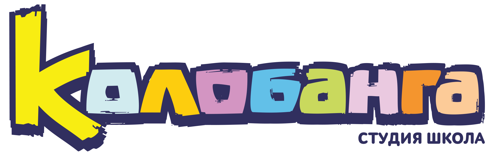

В «КОЛОБАНГУ» Я ПОЙДУ, ПУСТЬ МЕНЯ НАУЧАТ!

Обучающих курсов немало. Вернее, их неприлично много. Обычно далее
должно последовать логичное сравнение существующих предложений на рынке,
описание недостатков конкурентов и собственных преимуществ. Но мы этого
делать не будем, это уже сделали за нас, наши же конкуренты))). В общем,
если вам интересно, что и как у наших коллег-конкурентов, то как
поётся говорится - Welcome to the Internet. Мы будем
говорить "за себя".
Международный анимационный проект "Колобанга", который теперь смотрят в более чем 100 странах мира, начинался как небольшая инди-команда из трех человек. Все были большими энтузиастами. Но энтузиазм сам по себе мультфильмы не делает. Для того чтобы попасть на мировой рынок анимации, необходимы продвинутые знания компьютерных технологий и большая команда высококлассных специалистов. У "Колобанги" были энтузиазм и знания, но не было штата высококлассных специалистов. И мы решили эту проблему. Опираясь на свой собственный опыт, который основатели проекта приобретали начиная с 2005 года, была разработана профессиональная образовательная программа начинающих специалистов. Почему профессиональная?
Потому что она была ориентирована конкретно на подготовку специалистов с нуля для последующей работы непосредственно на настоящем анимационном производстве мультфильмов для международного проката. Обучение проходило в рамках работы над реальным проектом, а не ограничивалось выполнением заданий по видеоурокам. Фактически ученики были одновременно стажёрами, которые на практике применяли знания, полученные во время обучения, и получали опыт работы на настоящем анимационном производстве.
В итоге, у них в активе было не пресловутое абстрактное портфолио и фактически ничего не значащий диплом на базе видеоуроков «для начинающих», а реальная практика и титры с их именами и фамилиями в анимационном контенте, который демонстрируется во всем мире. Это идеальный вариант карьерного лифта. Согласитесь, выпускник с таким багажом и опытом будет желанным сотрудником в любой компании не только в сфере 3D графики и анимации, но и в любой другой компании технологических отраслей и IT.
С тех пор прошло много лет. За это время Студия-школа «Колобанга» уже подготовила сотни квалифицированных специалистов, которые ранее были поварами, продавцами-консультантами, курьерами, и другими работниками сфер, не имеющими никакого отношения к компьютерной графике и анимации. Теперь они работают в известных российских и зарубежных компаниях анимационной, игровой и киноиндустрии. Это высококлассные специалисты, мультфильмы которых смотрят не только в России, но и за рубежом, более чем в 100 странах мира. Включая Китай, США, Индию, Францию, Турцию, и другие страны Европы, Африки, Азии, Америки.
Теперь мы делимся знаниями и опытом с помощью инновационного образовательного проекта "Анимация всей Страны". Цель проекта - сделать анимацию частью образовательного стандарта, раскрыть таланты тысяч одаренных детей и помочь им занять достойное место в обществе.
СТУДИЯ-ШКОЛА «КОЛОБАНГА» ЭТО:
- Пятнадцатилетний опыт работы в сфере компьютерной графики и анимации.
- Пятнадцатилетний опыт в разработке и создании образовательных программ и обучающих курсов в сфере компьютерной графики и анимации.
- Обучение в рамках реальных проектов Студии-школы «Колобанга».
- Практическое портфолио с титрами учеников-стажеров в реальном проекте.
- Диплом, подтверждающий прохождение обучения и стажировку
- Удивительно привлекательная стоимость обучения.
- Возможность бесплатного обучения.
Заполните форму на сайте и получите условия.